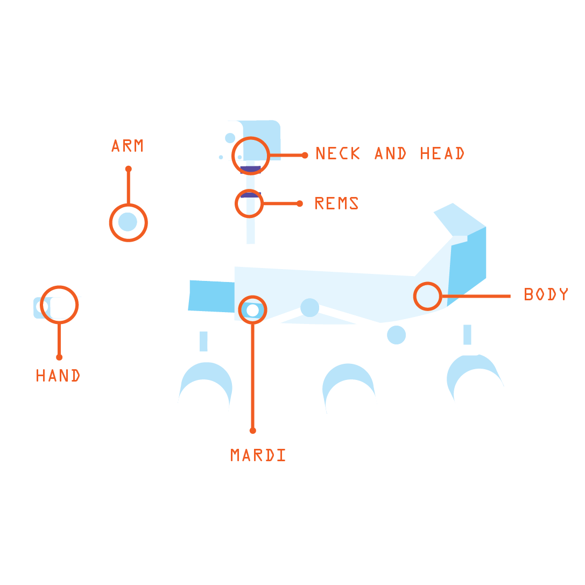

Allumer la radio
PAS D'IMAGE, ESSAYE ENCORE
x
La tête de Curiosity
x
Arrivée sur Mars de Curiosity
x
Qu'est ce que cette mission ?
L'exploration de Mars par Curiosity est le déroulement de la mission du rover de Mars Science Laboratory de la NASA sur la planète Mars depuis son atterrissage dans le cratère Gale le 5 août 2012. Le véhicule dispose de 75 kg d'équipements scientifiques et a pour objectif de déterminer si un environnement a pu être favorable à l'apparition de la vie.
En décembre 2012, après avoir parcouru 700 mètres vers l'est, Curiosity s'est installé sur le site de Yellowknife Bay où il a découvert des indices d'un ancien lac ou d'un ancien delta aux eaux non acides. Après y avoir effectué des analyses durant six mois, il se dirige à présent vers le sud-ouest, en direction du Mont Sharp qui, avec son empilement de couches géologiques, constitue un objectif majeur. Le 15 novembre 2015, il a franchi 12,5km.
x
Le corps de Curiosity

x